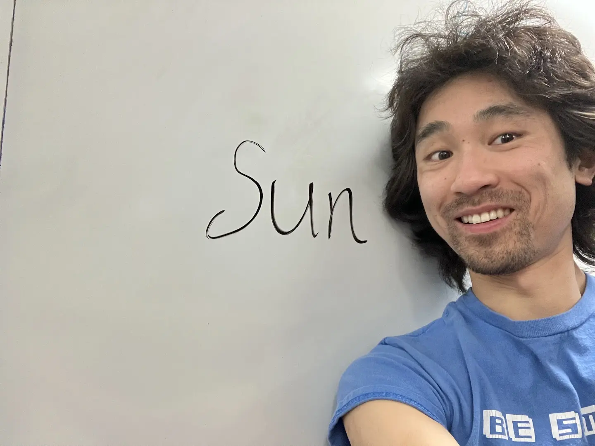

Papershop
Draw on paper, point, and speak to compose images and objects. The physical desk is the editor.
Interacting with AI should feel like a breath of fresh air.
For over thirty years, the Tangible Media Group, led by Professor Hiroshi Ishii, has bridged the digital and physical worlds. The Working Group carries that work into the age of AI.
Today, people use AI by taking turns: prompt, wait, read, prompt again. We give handles to ideas: simple controls bound to the meaning of what a model generates — a slider bound to “more poetic,” one puck per idea in a brainstorm. The output changes as you move them.
Draw on paper, point, and speak to compose images and objects. The physical desk is the editor.

One puck per idea. Pull, push, flip, and turn its knobs to steer what the AI generates in real time.

A living map of personal /now pages: all our complex lives all at once.

What if language models ran at 60 frames per second?
advisor

research leads



UROP researchers


We're recruiting UROPs for IAP and Spring 2027. Bring something you can contribute and an appetite for learning the rest.
read the opening →